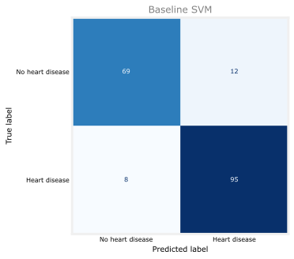
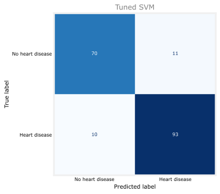
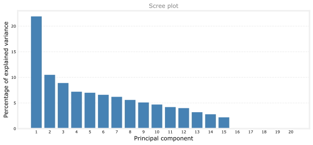
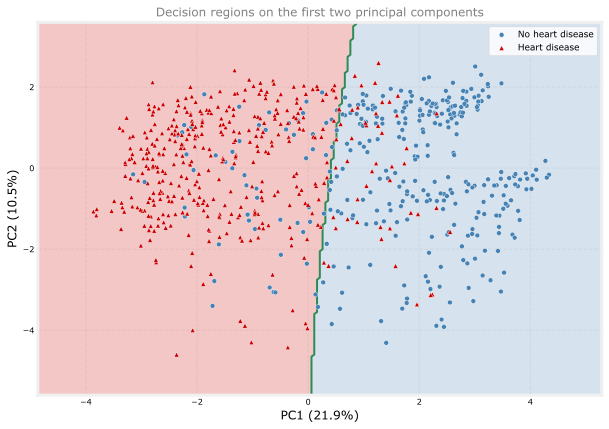

import numpy as np
import pandas as pd
import matplotlib.pyplot as plt
from sklearn.model_selection import train_test_split, GridSearchCV
from sklearn.preprocessing import StandardScaler
from sklearn.svm import SVC
from sklearn.metrics import ConfusionMatrixDisplay, accuracy_score
from sklearn.decomposition import PCA
plt.style.use("../../../deeplearning.mplstyle")
RANDOM_STATE = 55 # passed to every call so the page renders the same numbers each timeLab: Support Vector Machines
machine-learning
classification
support-vector-machines
Build, scale, and tune an RBF-kernel support vector machine on the heart disease dataset, then compare it against a decision tree and a random forest on the same split.
ImportantFive changes from the source notebook
This lab follows a scikit-learn support vector machine walkthrough from the reference library. It runs on scikit-learn 1.9.0, pandas 3.0.3, and NumPy 2.4.4, and five things changed (updated 2026-09-01).
- The dataset was swapped. The original used the UCI Cleveland heart disease file, which is not present in the reference folder. This lab uses the Heart Failure Prediction Dataset already hosted on this site at
media/heart.csv. It is the same problem with more examples, 918 rather than 297, and it buys something the original could not do. It is the identical dataset and the identical split used by the tree ensembles lab, so the last section of this page compares three model families on the same data. plot_confusion_matrixis gone. It was removed from scikit-learn in version 1.2. This lab usesConfusionMatrixDisplay.from_estimator, which replaced it.- Scaling was corrected. The original called
scale()separately on the training set and on the test set, which lets each one be centered by its own mean. That is a small data leak in reverse, and it means the test data is not transformed the way a deployed model would transform it. This lab fits aStandardScaleron the training data only and applies it to both. - Cross-validation scales inside each fold. Pre-scaling the whole training set and then cross-validating on it lets every fold contribute to the transformation used to predict that same fold, which makes the score optimistic. The tuning section here wraps the scaler and the classifier in a
Pipelineso scikit-learn refits the scaler within each fold. This is discussed on the page rather than done silently, because it is the mistake the original notebook makes and it is easy to repeat. - The grid includes scikit-learn’s defaults. The original searched a grid that excluded the default settings, which guarantees that the tuned model looks like an improvement whether or not it is one. Including the defaults changes the conclusion, and the honest result is discussed below rather than hidden.
The overall flow, the RBF kernel, the grid search over C and gamma, the confusion matrices, and the PCA decision-boundary plot are the notebook’s own.
One simplification is left in place deliberately. pd.get_dummies runs on the full table before the split, so the set of category columns is discovered from all the rows rather than from the training rows alone. No labels are involved and every category here appears on both sides of the split, so nothing leaks in practice. It is kept because it matches the tree ensembles lab and keeps the two comparable. In production code the encoder belongs inside the Pipeline alongside the scaler, fitted with handle_unknown='ignore' so an unseen category at prediction time does not crash the model.
This lab builds a support vector machine for classification using scikit-learn and the radial basis function kernel, to predict whether a patient has heart disease. Support vector machines are a good fit for this problem. The dataset has 918 rows, which is small, and getting the answer right matters more here than being able to narrate the reasoning.
Loading the Data
The target is HeartDisease, which is 1 when the patient has heart disease and 0 when they do not. The other eleven columns are the features, covering age and sex, chest pain type, resting blood pressure, cholesterol, fasting blood sugar, resting ECG results, maximum heart rate, exercise-induced angina, ST depression, and ST slope.
df = pd.read_csv("../../../media/heart.csv")
print("rows:", len(df))
df.head()rows: 918| Age | Sex | ChestPainType | RestingBP | Cholesterol | FastingBS | RestingECG | MaxHR | ExerciseAngina | Oldpeak | ST_Slope | HeartDisease | |
|---|---|---|---|---|---|---|---|---|---|---|---|---|
| 0 | 40 | M | ATA | 140 | 289 | 0 | Normal | 172 | N | 0.0 | Up | 0 |
| 1 | 49 | F | NAP | 160 | 180 | 0 | Normal | 156 | N | 1.0 | Flat | 1 |
| 2 | 37 | M | ATA | 130 | 283 | 0 | ST | 98 | N | 0.0 | Up | 0 |
| 3 | 48 | F | ASY | 138 | 214 | 0 | Normal | 108 | Y | 1.5 | Flat | 1 |
| 4 | 54 | M | NAP | 150 | 195 | 0 | Normal | 122 | N | 0.0 | Up | 0 |
One-Hot Encoding
Five columns hold categories rather than numbers. Sex is M or F, ChestPainType is one of four codes such as ATA and ASY, and so on. A support vector machine works with distances and dot products, so it needs every feature to be a number, and it needs those numbers to mean something on a scale.
Encoding the four chest pain types as \(1\), \(2\), \(3\), \(4\) would be a mistake, because it silently claims that type \(4\) is four times type \(1\) and that type \(2\) sits between types \(1\) and \(3\). None of that is true. One-hot encoding avoids the claim by replacing one column of four categories with four columns of zeros and ones, exactly one of which is set. This is the same encoding used for decision trees earlier in the course.
cat_variables = ['Sex',
'ChestPainType',
'RestingECG',
'ExerciseAngina',
'ST_Slope']
df = pd.get_dummies(data=df,
prefix=cat_variables,
columns=cat_variables)
features = [c for c in df.columns if c != 'HeartDisease']
print("features after encoding:", len(features))
df.head()features after encoding: 20| Age | RestingBP | Cholesterol | FastingBS | MaxHR | Oldpeak | HeartDisease | Sex_F | Sex_M | ChestPainType_ASY | ... | ChestPainType_NAP | ChestPainType_TA | RestingECG_LVH | RestingECG_Normal | RestingECG_ST | ExerciseAngina_N | ExerciseAngina_Y | ST_Slope_Down | ST_Slope_Flat | ST_Slope_Up | |
|---|---|---|---|---|---|---|---|---|---|---|---|---|---|---|---|---|---|---|---|---|---|
| 0 | 40 | 140 | 289 | 0 | 172 | 0.0 | 0 | False | True | False | ... | False | False | False | True | False | True | False | False | False | True |
| 1 | 49 | 160 | 180 | 0 | 156 | 1.0 | 1 | True | False | False | ... | True | False | False | True | False | True | False | False | True | False |
| 2 | 37 | 130 | 283 | 0 | 98 | 0.0 | 0 | False | True | False | ... | False | False | False | False | True | True | False | False | False | True |
| 3 | 48 | 138 | 214 | 0 | 108 | 1.5 | 1 | True | False | True | ... | False | False | False | True | False | False | True | False | True | False |
| 4 | 54 | 150 | 195 | 0 | 122 | 0.0 | 0 | False | True | False | ... | True | False | False | True | False | True | False | False | False | True |
5 rows × 21 columns
Eleven original columns became twenty, because each categorical column expanded into one column per category.
Splitting and Scaling
Split first, scale second. The order matters and it is the single most common mistake in this pipeline.
X_train, X_test, y_train, y_test = train_test_split(
df[features], df['HeartDisease'],
train_size=0.8, random_state=RANDOM_STATE)
print(f"train examples: {len(X_train)}")
print(f"test examples: {len(X_test)}")train examples: 734
test examples: 184Now the scaling. A support vector machine measures squared distances between points, and the RBF kernel is built directly on those distances. It does not care where the origin is, since shifting every point by the same amount leaves all the distances unchanged, but it cares enormously that the features are comparable in size. Look at the raw numbers to see why that is not automatic here. Cholesterol runs into the hundreds while FastingBS is zero or one, so an unscaled distance calculation would be almost entirely a statement about cholesterol and would barely notice the other nineteen features. This is feature scaling doing the same job it did for gradient descent, for a different reason.
StandardScaler subtracts the mean and divides by the standard deviation, so every feature ends up centered at zero with a spread of about one.
scaler = StandardScaler().fit(X_train) # the mean and spread come from training data only
X_train_scaled = scaler.transform(X_train)
X_test_scaled = scaler.transform(X_test)
print("cholesterol before scaling: mean %.1f, std %.1f"
% (X_train['Cholesterol'].mean(), X_train['Cholesterol'].std()))
print("cholesterol after scaling: mean %.1f, std %.1f"
% (X_train_scaled[:, features.index('Cholesterol')].mean(),
X_train_scaled[:, features.index('Cholesterol')].std()))cholesterol before scaling: mean 199.0, std 111.1
cholesterol after scaling: mean -0.0, std 1.0The scaler is fitted on the training data only, and the test data is then transformed with those training means and standard deviations. Fitting it on everything would let the test set influence the transformation, which is a form of data leakage. It also would not match reality, since a deployed model has to scale tomorrow’s patient using numbers it learned today.
Baseline Model
With the data formatted, the model itself is one line. SVC defaults to the RBF kernel, C=1.0, and gamma='scale'.
clf_svm = SVC(random_state=RANDOM_STATE)
clf_svm.fit(X_train_scaled, y_train)
print("training accuracy: %.4f" % accuracy_score(y_train, clf_svm.predict(X_train_scaled)))
print("test accuracy: %.4f" % accuracy_score(y_test, clf_svm.predict(X_test_scaled)))training accuracy: 0.9060
test accuracy: 0.8913A single accuracy number hides which mistakes the model is making, and in a medical setting the two kinds of mistake are not equally bad. A confusion matrix breaks the predictions into four cells, with the true labels down the side and the predicted labels across the top.
%config InlineBackend.figure_formats = ['svg']
fig, ax = plt.subplots(figsize=(5.5, 4.6))
ConfusionMatrixDisplay.from_estimator(
clf_svm, X_test_scaled, y_test,
display_labels=["No heart disease", "Heart disease"],
cmap="Blues", colorbar=False, ax=ax)
ax.set_title("Baseline SVM", fontsize=12, color='gray')
plt.tight_layout()
plt.show()
The bottom-left cell is the one to worry about. Those are patients who have heart disease and were told they do not, which is a false negative, and it is a much more expensive error here than the top-right cell, where a healthy patient is sent for further tests they did not need. Plain accuracy weighs those two identically. This is the skewed dataset problem, and the confusion matrix is how you see past the single number.
Now check which training examples this model actually depends on.
n_sv = clf_svm.support_vectors_.shape[0]
print("support vectors: %d out of %d training examples (%.0f%%)"
% (n_sv, len(X_train), 100 * n_sv / len(X_train)))
print("per class:", clf_svm.n_support_)support vectors: 311 out of 734 training examples (42%)
per class: [143 168]Every training example not counted there could be deleted, and the SVM fitted to the remaining rows with the same features, the same scaling, and the same kernel settings would produce the identical boundary. Note the size of that set, though. At 42 percent it is not the handful the tidy separable picture suggests, and the reason is that these two classes genuinely overlap, so every point sitting inside the margin counts as a support vector too.
Tuning C and gamma
The baseline used whatever defaults scikit-learn ships. Both C and gamma control the bias and variance trade, and they interact, so they have to be searched together rather than one at a time.
GridSearchCV tries every combination in the grid and scores each one by cross-validation, here splitting the training data into five folds and averaging.
Before running it, the scaling has to be reorganized, and the reason is the whole point of this section.
WarningScaling and cross-validation do not mix the easy way
X_train_scaled was produced by a scaler fitted on all of the training data. That was correct for the single fit above, where the only thing held back was the test set.
It is not correct here. Cross-validation carves the training data into five folds and, each time round, treats one fold as unseen. But every fold already contributed its mean and standard deviation to the scaler, so each fold has quietly informed the transformation applied to the data used to predict it. The cross-validation score comes out slightly optimistic, and the tuning decision is made on a number that is not quite honest.
The fix is to stop scaling in advance and make the scaler part of the model. A Pipeline chains the scaler and the classifier into one estimator, and scikit-learn refits the whole chain inside each fold, so every fold’s scaler is built from that fold’s training portion only.
from sklearn.pipeline import Pipeline
from sklearn.model_selection import cross_val_score
# The scaler is now a step in the model, so it is refitted inside every fold.
pipe = Pipeline([('scaler', StandardScaler()),
('svc', SVC(random_state=RANDOM_STATE))])
# Unscaled X_train goes in, because the pipeline does its own scaling.
baseline_cv = cross_val_score(pipe, X_train, y_train, cv=5).mean()
print("baseline cross-validation accuracy: %.4f" % baseline_cv)baseline cross-validation accuracy: 0.8542Now the search. Parameter names are prefixed with the pipeline step they belong to, so C becomes svc__C. The grid includes gamma='scale', which is the default, so the search is allowed to conclude that the defaults were already fine.
param_grid = {
'svc__C': [0.01, 0.1, 1, 10, 100],
'svc__gamma': ['scale', 0.1, 0.01, 0.001],
}
search = GridSearchCV(pipe, param_grid, cv=5, n_jobs=-1)
search.fit(X_train, y_train)
print("best parameters:", search.best_params_)
print("tuned cross-validation accuracy: %.4f" % search.best_score_)best parameters: {'svc__C': 100, 'svc__gamma': 0.001}
tuned cross-validation accuracy: 0.8650Twenty combinations, each fitted five times, is 100 cross-validation fits, and GridSearchCV then refits the winner once on the full training set, for 101 in total.
clf_tuned = search.best_estimator_ # a fitted Pipeline, scaler included
print("tuned training accuracy: %.4f" % accuracy_score(y_train, clf_tuned.predict(X_train)))
print("tuned test accuracy: %.4f" % accuracy_score(y_test, clf_tuned.predict(X_test)))
print("tuned support vectors: %d" % clf_tuned.named_steps['svc'].support_vectors_.shape[0])tuned training accuracy: 0.8747
tuned test accuracy: 0.8859
tuned support vectors: 255fig, ax = plt.subplots(figsize=(5.5, 4.6))
ConfusionMatrixDisplay.from_estimator(
clf_tuned, X_test, y_test, # unscaled: the pipeline scales internally
display_labels=["No heart disease", "Heart disease"],
cmap="Blues", colorbar=False, ax=ax)
ax.set_title("Tuned SVM", fontsize=12, color='gray')
plt.tight_layout()
plt.show()
What Tuning Actually Bought
Read those numbers carefully, because this is the interesting part of the lab and it is not the tidy result the source notebook reported.
Grid search did improve the cross-validation score, which is the thing it was asked to optimize. It did not improve the test accuracy, which came out slightly below the untuned baseline. That looks like a failure and it is not one. Three things are going on.
- The test set is small. With 184 examples, one prediction is worth about half a percentage point, and the entire gap between the two models here is about half a percentage point. That is a difference of one prediction. Treating it as a ranking is reading a coin flip as a trend.
- Cross-validation and the test set are measuring different samples. The tuned model scored better on average across five folds of the training data. That it is not also better on this particular held-out set is ordinary variation, not a contradiction. Be careful with the word better, though. The winner was chosen by looking at those same fold scores, so its cross-validation number carries some selection optimism. It is the best of twenty candidates on those folds, which is not the same as the best model.
- Choosing the model by the test score would be cheating. If you now went back and picked whichever model scored higher on the test set, the test set would have influenced model selection and would no longer be an honest estimate of anything. The development process exists to prevent exactly this.
The honest conclusion is that on this dataset the scikit-learn defaults were already close to as good as this grid could do, and the search largely confirmed that rather than beating it. That is a normal and useful outcome. A grid search that never returns “the defaults were fine” is usually a grid search that excluded the defaults.
Drawing the Boundary
The model uses twenty features, so its decision boundary lives in twenty dimensions and cannot be drawn at all. Principal components analysis compresses those twenty into two combined axes that retain as much of the variation as possible, which gives something that fits on a page. PCA is covered properly in Course 3, and for now it is enough to know that it is a way to shrink a twenty-dimensional picture into a two-dimensional one.
Be clear about what the figure below is, because it is easy to misread. It is not a cross-section of the model trained above. It is a second, separate SVM, trained from scratch on two principal components, borrowing the hyperparameters chosen for the twenty-feature model. It is there to show the characteristic shape an RBF boundary takes, not to display or evaluate the model you actually tuned.
Before drawing, check whether the shrunken picture is worth trusting. A scree plot shows how much of the original variation each component keeps.
pca = PCA()
X_train_pca = pca.fit_transform(X_train_scaled)
per_var = np.round(pca.explained_variance_ratio_ * 100, decimals=1)
fig, ax = plt.subplots(figsize=(9, 4.2))
ax.bar(range(1, len(per_var) + 1), per_var, color='#4682B4')
ax.set_xlabel('Principal component', fontsize=12)
ax.set_ylabel('Percentage of explained variance', fontsize=12)
ax.set_xticks(range(1, len(per_var) + 1))
ax.set_title('Scree plot', fontsize=12, color='gray')
ax.grid(axis='y', linestyle='--', alpha=0.4)
plt.tight_layout()
plt.show()
print("PC1 + PC2 together capture %.1f%% of the variation" % per_var[:2].sum())
PC1 + PC2 together capture 32.4% of the variationThat is a warning worth taking seriously. The first two components hold only about a third of the variation, so eighteen dimensions of structure are being flattened away. Points that look misclassified in the picture may be cleanly separated in the dimensions that were discarded. Combined with the fact that this is a separately trained model, the figure is worth drawing for its shape and worthless for judging performance.
pc1, pc2 = X_train_pca[:, 0], X_train_pca[:, 1]
# A separate 2D model, since the 20-dimensional boundary cannot be drawn.
# The pipeline prefixes its parameter names, so strip "svc__" back off.
svm_params = {k.removeprefix('svc__'): v for k, v in search.best_params_.items()}
clf_plot = SVC(random_state=RANDOM_STATE, **svm_params)
clf_plot.fit(np.column_stack((pc1, pc2)), y_train)
# A grid of points covering the plot, each one classified, to shade the regions.
pad = 1.0
xx, yy = np.meshgrid(
np.arange(pc1.min() - pad, pc1.max() + pad, 0.05),
np.arange(pc2.min() - pad, pc2.max() + pad, 0.05))
Z = clf_plot.predict(np.column_stack((xx.ravel(), yy.ravel()))).reshape(xx.shape)
fig, ax = plt.subplots(figsize=(8.5, 6))
ax.contourf(xx, yy, Z, alpha=0.22, levels=1, colors=['#4682B4', '#CC0000'])
ax.contour(xx, yy, Z, levels=[0.5], colors=['#2E8B57'], linewidths=2)
mask = y_train.values == 0
ax.scatter(pc1[mask], pc2[mask], color='#4682B4', s=24,
edgecolors='white', linewidths=0.4, label='No heart disease', zorder=3)
ax.scatter(pc1[~mask], pc2[~mask], color='#CC0000', s=24, marker='^',
edgecolors='white', linewidths=0.4, label='Heart disease', zorder=3)
ax.set_xlabel(f'PC1 ({per_var[0]}%)', fontsize=12)
ax.set_ylabel(f'PC2 ({per_var[1]}%)', fontsize=12)
ax.set_title('Decision regions on the first two principal components',
fontsize=12, color='gray')
ax.legend(loc='upper right', fontsize=9)
ax.grid(linestyle='--', alpha=0.3)
plt.tight_layout()
plt.show()
The blue region is where this two-dimensional model would predict a healthy patient and the red region is where it would predict heart disease. The green curve between them is the boundary. Notice that it curves rather than running straight, which is the RBF kernel doing its work, and notice that it is smooth rather than wiggly. That smoothness comes from the small gamma of \(0.001\), which spreads each training point’s influence over a wide neighborhood. The large C of \(100\) pulls the other way, toward a boundary that bends around individual points, and here the small gamma wins.
Comparison Against the Trees
Because this lab uses the same dataset and the same split as the tree ensembles lab, the three model families can be put side by side on identical data. Nothing below is tuned beyond what each model needs to be a fair representative.
from sklearn.tree import DecisionTreeClassifier
from sklearn.ensemble import RandomForestClassifier
results = []
# clf_tuned is a Pipeline, so it scales internally. Passing the already
# scaled arrays here would scale them a second time.
results.append(("SVM (RBF, tuned)",
accuracy_score(y_train, clf_tuned.predict(X_train)),
accuracy_score(y_test, clf_tuned.predict(X_test))))
# Trees split on thresholds, so they need no scaling. They do still get the
# same one-hot encoded columns, since scikit-learn trees require numbers.
tree = DecisionTreeClassifier(min_samples_split=50, max_depth=3,
random_state=RANDOM_STATE).fit(X_train, y_train)
results.append(("Decision tree",
accuracy_score(y_train, tree.predict(X_train)),
accuracy_score(y_test, tree.predict(X_test))))
forest = RandomForestClassifier(n_estimators=100, min_samples_split=10,
random_state=RANDOM_STATE).fit(X_train, y_train)
results.append(("Random forest",
accuracy_score(y_train, forest.predict(X_train)),
accuracy_score(y_test, forest.predict(X_test))))
print(f"{'Model':<22}{'Train':>9}{'Test':>9}")
for name, tr, te in results:
print(f"{name:<22}{tr:>9.4f}{te:>9.4f}")Model Train Test
SVM (RBF, tuned) 0.8747 0.8859
Decision tree 0.8583 0.8641
Random forest 0.9305 0.8859Two things in that table are worth more than the ranking itself.
The first is that the models land close together. On a clean tabular dataset of this size, no family runs away with it, and the spread between them is smaller than most people expect. Choosing a model here is not mainly a question of accuracy.
The second is the gap between each model’s train and test columns, which is the bias and variance picture made concrete. A model with a much higher training score than test score is memorizing rather than generalizing, and that shows up in this table more clearly than any single accuracy number does.
Given how narrow the spread is, the deciding factors are the ones from the concept page rather than the accuracy column. The trees skip the scaling step entirely, since a threshold test does not care about units, and a single tree can explain a prediction as a chain of conditions a clinician could repeat. Note that they do not skip the one-hot encoding here, because scikit-learn’s tree implementations still require numeric input. The SVM needs both preprocessing steps and cannot explain anything, but it holds up well on small data and would keep doing so on a dataset with many more features than this one.
The single tree is the weakest of the three here, and it is the only one that can be read aloud. Whether that trade is worth a couple of points of accuracy is a decision about the setting rather than about the models, and it is not one the numbers can make for you.
Review Questions
1. Why must the scaler be fitted on the training set rather than on the whole dataset?
TipAnswer
Because fitting on everything lets the test data influence the means and standard deviations used in the transformation, which is data leakage and makes the test score optimistic. It also does not match deployment, where a model has to scale a new patient using statistics it learned earlier.
1. Grid search improved the cross-validation score but not the test accuracy. What should you conclude?
TipAnswer
That the defaults were already close to the best this grid could find on these folds, and that the test-set difference is one prediction out of 184, about half a percentage point, which is inside the noise. You should not go back and pick whichever model scored higher on the test set, because doing so lets the test set influence model selection and destroys its value as an honest estimate.
1. Why is the two-dimensional decision boundary plot a weak basis for judging the model?
TipAnswer
Because the first two principal components capture only about a third of the variation in the data. The other eighteen dimensions are flattened away, so points that appear misclassified in the picture may be cleanly separated in the full space. The plot shows the shape an RBF boundary takes, not how well the model performs.
1. The decision tree and the SVM score about the same on this data. Why might you still prefer the tree?
TipAnswer
Because it needs no scaling, and because it can state its reasoning as a chain of conditions such as chest pain type followed by maximum heart rate. Note that it does still take the same one-hot encoding as the SVM, since scikit-learn’s tree implementations require numeric input. In a medical setting where the decision has to be explained to a patient or defended to a colleague, being able to read the model aloud is worth more than a couple of points of accuracy.